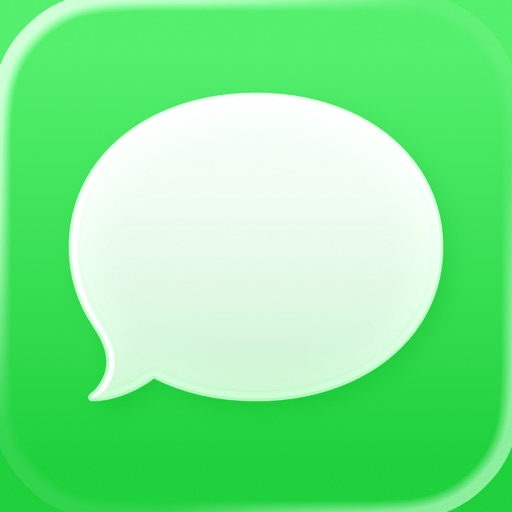
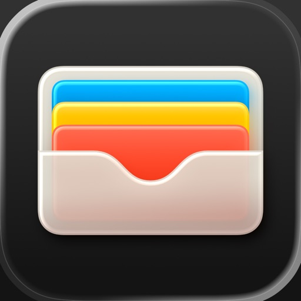
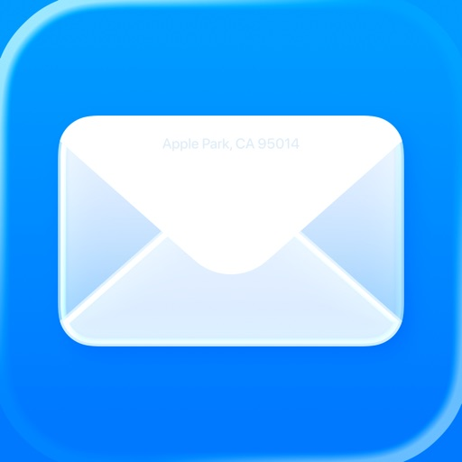

nowTEAMS

WALLET
nextYour attention
Useful notifications can reach you easily.
Incoming notification
Waiting for notificationSend your first notification
Use “Send notification” above to see how it reaches you.
ENGINE DECISION
Interrupt
Delivered with an interruption
Assessing notificationUrgency · importance · context
Why this decision?
Technical details
SIMULATED MODEL ESTIMATES
- Urgency
- Importance
- Interrupt-worthiness
DETERMINISTIC POLICY
- Attention baseline
- Recent interruption pressure
- Your correction
- Effective threshold
Illustrative scores. No model is connected. Activity is not used in this demo.